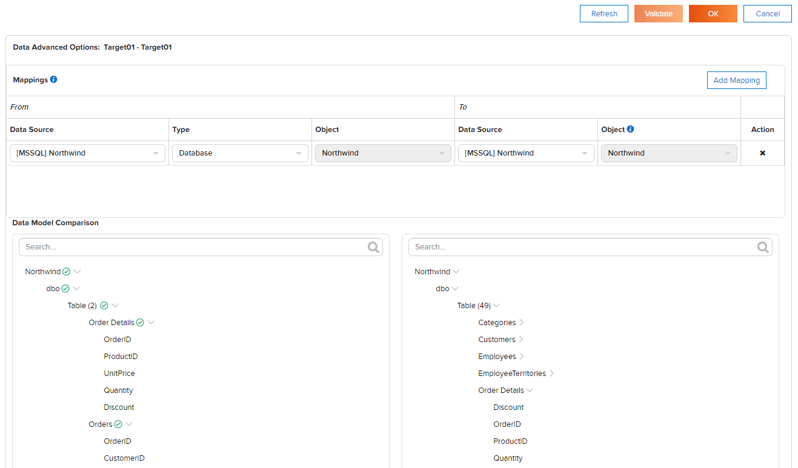

Copy Management¶
The Copy Management feature can be used to copy data among system and tenants, including:
- Data Connectors
- Data Model
- Advanced Data Settings
- Dashboards
- Reports
- Tenant Permissions
- Roles (with Permissions)
- System Configuration settings
In addition, the scheduler can be configured to start copy tasks automatically at the right time.
Tip
Scheduler and copying of Data Connectors and System Configuration settings are available from release 3.9.3.
Workspace in terms of Izenda is a configured task to copy selected settings among tenants.
View Workspace List¶
-
In browser, log in to Izenda as a user with Copy Management permission.
Click Settings, then Copy Management in the left menu.
The list of workspaces is displayed in Middle Panel.
Tick the Show only my workspace check-box to filter the list by workspaces owned by current user.
Type a partial name into the Search box to further filter the list by similar name.
- Click on a workspace to open it.
- Click the x icon to delete the workspace.
{kind=link}
Edit a Workspace¶
Clicking on a workspace in Middle Panel will open it. Each workspace contains 4 sections:
Workspace Name and Created date
allows user to view workspace name and created date, and to rename the workspace.
Source Tenant
allows user to pick specific tenant to copy from.
Destination Tenant List
contains tenants to copy to.
Items to Copy
allows user to quickly specify groups of settings to copy.
{kind=link}
Rename a Workspace¶
- Click the pencil icon to rename the workspace.
- Enter a new name for the workspace.
- Click the check icon to confirm the new name.
- The name will be checked for duplication.
Configure Source Tenant¶
- Click the down arrow in Source box to see the list of tenants.
- Click specific tenant to use it as Source.
Configure Destination Tenant List¶
- Click the down arrow in Destination box to see the list of tenants.
- Click tenant to add it to the box (several tenants can be selected as Destination).
- Click the down arrow again to close the list.
Note
To copy to all tenants, simply select “All Tenants” option. It will replace all currently selected tenants when selected.
Items to Copy¶
Each item to copy can have its own settings, which are displayed under Main Panel in a Workspace.
This section lists selectable items to copy:
Only Settings *
allows user to pick specific tenant to copy from.
This special item was introduced to emulate the template mode for tenants. A distinctive feature of this item is that user does not need to select specific connectors, roles, etc. and all setting from Source tenant will be copied, even new ones that were created after creating the workspace.
If this item is selected, all other checkboxes in Item to Copy section will be unavailable. Dashboards and Reports are not copied in this mode.
Warning
Copying all settings may take a long time.
Data Connectors *
allows user to copy specific connectors from Source tenant to Destination tenants.
If user selects this item, an additional panel will be displayed in the workspace for selecting specific connectors.
Data Model
Advanced Data Settings
allows user to copy Advanced Settings like Performance, Security, Category, Others specific for each tenant.
Dashboards
allows user to copy dashboards.
If user selects this item, an additional panel will be displayed in the workspace where user can select specific dashboards.
Reports
allows user to copy reports.
If user selects this item, an additional panel will be displayed in the workspace where user can select specific reports.
Tenant Permissions
allows user to copy tenant permissions.
Tenant Permissions cannot be copied from System level to tenant. This is due to the nature of system level permissions.
Roles (with Permissions)
allows user to copy existing roles and role permissions.
Roles cannot be copied from System level to tenant. This is due to the nature of system level permissions.
If user selects this item, the Roles Copy Settings panel will be displayed in the workspace for selecting specific roles.
Tick the Copy Role Permissions check-box to copy selected roles with permissions.
System Configuration settings *
allows user to copy system configuration settings like Email (SMTP Configuration), Report (Default Header Image and Default Color Theme), Google Map (Google API Configuration).
If user selects this item, the System Configuration Copy Settings panel will be displayed in the workspace to select settings for copying.
{kind=link}
{kind=link}
{kind=link}
Items marked with an asterisk (*) are available starting from version 3.9.3.
Edit mappings¶
A mapping specifies the physical destination for each database connection or schema of tenant (in case the database connection or schema name in destination is different from logical data model).
- Select a database connection in Source.
- Choose the mapping type: Database or Schema.
- Select a schema from the Object list if using Schema mapping.
- For Database mapping, the Object list is already populated with the database name.
- Select the target database connection.
- Enter the schema name into the Object list if using Schema mapping.
- Or enter the database name into the Object list if using Database mapping.
- Select the tenants to apply this mapping to.
- Continue to add mappings to cover all selected database connections, schemas and tenants.
- Tenants without a Database mapping will be copied to the same database connection.
- Each schema without mapping will be copied to a schema with the same name (in the database connection specified in mapping).
For example, user needs to copy data model for schema dbo to three tenants Target01, Target02 and Target03.
Target01 and Target02 share the same physical database Northwind while Target03 uses ACMEDB database on a separate server.
Following is how to configure the workspace:
Tick the Data Model check-box in Items to Copy section.
Tick dbo schema to include in the copy task.
Select Target01, Target02 and Target03 as Destinations.
Add mappings as follows
{kind=link}
Validate Consistency between Source and Destinations¶
Click Validate button at the top to validate for tenants with status “Need validated”:
Each tenant will be checked for a valid mapping for each schema.
Click the gear icon (⚙) next to each tenant to open Advanced Settings page for that tenant.
Click Validate button at the top to validate consistency in data model between source and the selected tenant.
Selected objects in source will be checked for existence in data model for selected tenant by name.
Click OK to close the page.
Fig. 151 Workspace Validation
{kind=link}
Run Copy¶
Click Run Copy button to perform the copy of selected items for tenants with status “Ready To Copy”.
Click OK to confirm to overwrite existing Data Model if needed.
{kind=link}
Refresh a Workspace¶
User can refresh a workspace to see the changes that appeared in Source tenant after the current workspace was created.
- Click Refresh button to refresh the current workspace.
- Check exsiting ones and select new items to copy if needed.
- Click Save to save the workspace.
Scheduler Configuration¶
-
Click Schedule button at the top to open the schedule properties.
Configure schedule properties to run copy on a monthly, weekly, daily or hourly basis.
Click OK to close the dialog.
{kind=link}
All changes in Data Model will be automatically overwritten when the workspace is started by the scheduler.
Using the Scheduler, user can distribute changes made in one Source tenant to Destination tenants by schedule. In this way, a model of tenant templates is implemented, in which one of the tenants acts as a template for other tenants.